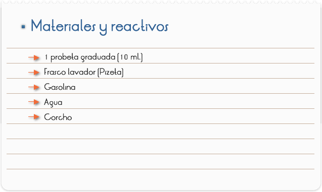
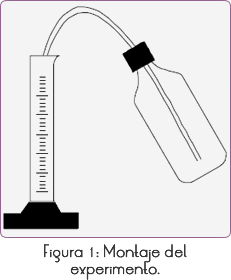
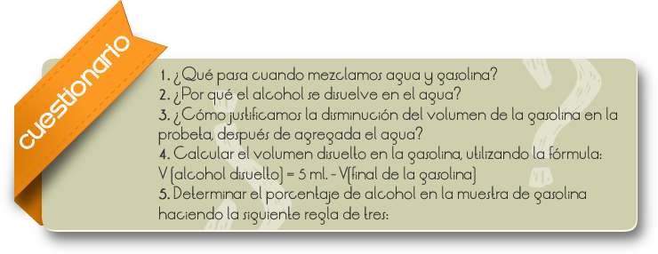
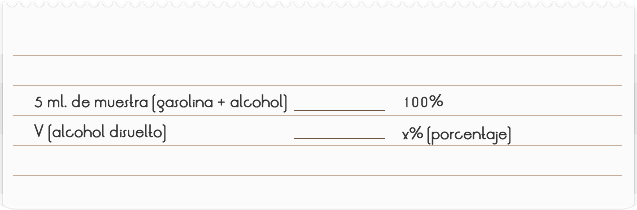
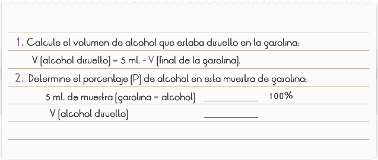

Introducción
General Motors, Ford y Chrysler, los tres principales fabricantes estadounidenses de automóviles redoblan sus esfuerzos para reducir la dependencia de la gasolina en sus vehículos, lo que permitiría aumentar sus ingresos además de duplicar la producción de autos que funcionan con etanol y biodiesel. Las tres armadoras fabricarán más vehículos "flexibles", los cuales pueden consumir tanto gasolina o diesel como el combustible E85, una mezcla de alcohol-etanol y gasolina o biodiesel, otro combustible derivado de aceites vegetales.
Objetivo
Identificar la presencia de alcohol en la gasolina y determinar su porcentaje.

1. Colocar 5 ml. de agua en una probeta y agregar cuidadosamente, con auxilio de una pipeta, gasolina hasta completar 10 ml. (Figura 1).
2. Tapar la probeta y agitar muy bien el sistema.
3. Ver el volumen ocupado por la gasolina y anotar al lado: _________ ml.
4. Hacer los cálculos para determinar el tenor alcohólico en la gasolina.



RESULTADOS Y CONCLUSIONES
Agua y gasolina son líquidos que, prácticamente, no se mezclan. De esta forma, en la probeta se produce la formación de dos niveles: agua (estrato superior) y gasolina (estrato inferior).
El alcohol y el agua son líquidos que se mezclan (mezclables), y su mezcla es siempre homogénea.
Podemos observar que la parte de gasolina en la mezcla disminuye, pues el alcohol que estaba disuelto es atraído por las moléculas de agua formando una nueva mezcla "alcohol-agua". Esto ocurre porque la interacción molecular entre el alcohol y el agua (puentes de hidrógeno) es mucho más fuerte que la interacción intermolecular entre las moléculas de la gasolina (que es un hidrocarbonato) y las del alcohol.
Para determinar el tenor (grado) en la gasolina proceda de la siguiente forma:
